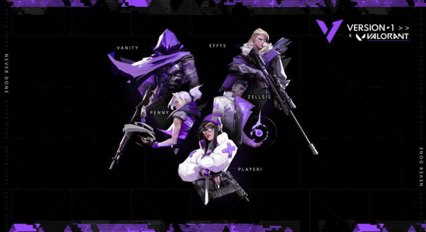

Version1 and Xset lock in Challengers spots while Cloud9 and Immortals fall
While 100 Thieves and Envy continued to thrive in the upper bracket, two incredibly competitive series determined who would join in them in the final four.
Four out of the eight teams to compete in the Challengers Finals have been decided as Immortals and Cloud9 Blue were the last teams to be knocked out.
Cloud9 fails to close out
The lead up to this closed qualifier had Cloud9 showing some of their best performances since the pre-VCT era of VALORANT esports. This carried over into their first series, as Cloud9’s initial victory over Immortals put the organization within one series of qualifying for their first Challengers event. Their two consecutive losses that follow made this result even more devastating.
100 Thieves’ victory over Cloud9 secured them a top four finish largely off the back of Ethan “Ethan” Arnold. The relatively new VALORANT player has continued to show immense potential and presented himself as one of the top players of the event, averaging 1.29 K/D, 146 ADR, and .89 KPR thus far. The 2-0 defeat Cloud9 suffered embodied this incredible performance while placing them in the lower bracket.
A competitive series against Verson1 sealed the tomb on Cloud9’s Challenger’s hopes for now. Though Cloud9 made strides on Split, taking V1’s own map pick through Son “xeta” Seon-ho’s Skye which provided an alternative ‘flash-and-dash’ combo, they ultimately choked an 8-4 lead. Only taking 2 rounds on defender side, Cloud9 clearly still has room for improvement if they hope to make a deeper run in Challengers 2.
Xset and Version1 qualify against the odds
Xset locked in their place for a second shot at Challengers, though suffering an initial loss to Envy, the ever constant VALORANT underdogs were able to rebound by defeating Immortals 2-1.
While Ascent began with a tight 13-10 win for Xset, Immortals took Bind in a landslide fashion. The momentum did not last for Immortals however as Zander “thwifo” Kim, the persistent Controller for Xset, had an incredible, almost equally as dominant, series as he ended with 49 frags, 157 ADR, and a 60% ESR.
The relatively new roster, Version1, who most notable acquired former Gen.G Cypher main Keven “PLAYER1” Champagne will make their first shot at a major tournament after their Challengers clenching victory over Cloud9. Starting out the gate strong on Icebox, Verson1 dominated their opponent’s map pick 13-6 before falling short on Split.
Though Anthony “vanity” Malaspina has largely been heralded as V1’s top performer, it was Loic “effys” Sauvageau who facilitated the second half comeback. An incredible 1v3 clutch took the life out of Cloud9 and firmly put the economic advantage in V1’s hands, which C9 never recovered from.
Continuing an ever prevalent trend in VALORANT, both of these tier 2 organizations ousted major organizations and put themselves on course to compete for Masters in Iceland.